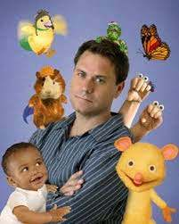

The creator of wonderpets developed the idea for Wonder Pets while he was producing a previous Nickelodeon show-- Oobi. The pilot episode featured Linny the Guiena Pig going on adventures and was set with classical music. When Selig first screened the shorts, they were meet with enthusiasm and Selig decided to send the shorts to Nickelodeon executives.
1. Text align
I wanted to center my text and images, so I used "text-align" to do so.
2. Border edits
I wanted to change up the border a little bit so I used "border-styles" to make the border dashed.
3. Hovering
In order to make color changes to links and images when I hovered over them, I used "imghover" and "ahover"